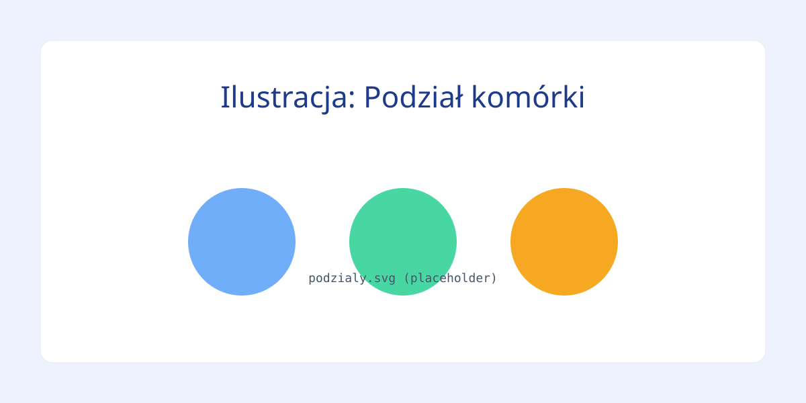
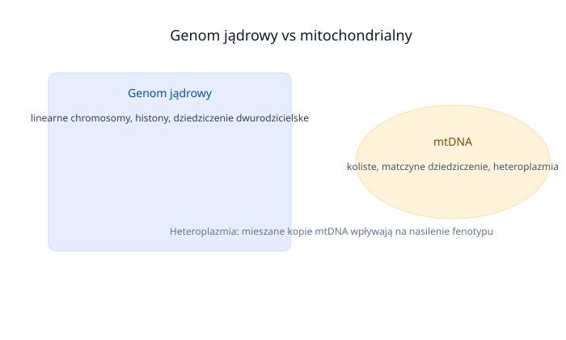
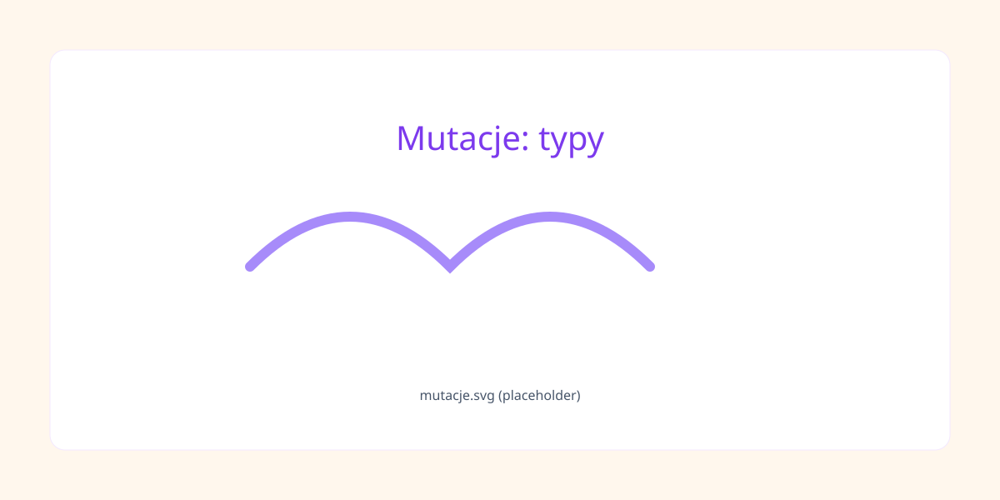

Moduł 1: Podstawy Genetyki i Podziały Komórkowe
Kanon teoretyczny i rygorystyczne mechanizmy podziałów komórkowych.
Podstawy Genetyki Ogólnej
Podziały

Podział Komórki i Ploidalność
- Mitoza: Podział komórek somatycznych organizmu; zachowuje wyjściową ploidalność chromosomową (2n → 2n). Nieprawidłowości w mitozie postzygotycznej indukują mozaicyzm somatyczny.
- Mejoza: Podział redukcyjny zachodzący w komórkach macierzystych linii płciowej prowadzący do powstania gamet (2n → 1n). Obejmuje wymianę materiału genetycznego (crossing-over) w pachytenie profazy I. Nondysjunkcja wywołuje trisomie.
Prawa Mendla
Prawa Dziedziczenia Mendla
- I Prawo Mendla (Prawo czystości gamet): Każda formowana gameta posiada wyłącznie jeden allel z danej pary locus genu.
- II Prawo Mendla (Prawo niezależnej segregacji cech): Cechy determinowane przez odrębne geny segregują się i dziedziczą niezależnie od siebie.
Genomy

Genom Jądrowy vs Mitochondrialny
- Genom Jądrowy: Kwas deoksyrybonukleinowy (DNA) o strukturze linearnej, zorganizowany w chromosomy, upakowane na histonach; dziedziczony dwurodzicielsko.
- Genom Mitochondrialny (mtDNA): Koliste cząsteczki DNA zlokalizowane w macierzy mitochondriów, kodujące 37 genów, cechujące się brakiem histonów i wysokim współczynnikiem mutacji; dziedziczone wyłącznie w linii matczynej.
Mutacje

Typy Mutacji Genowych, Genotyp i Fenotyp
- Substytucje Punktowe: Zmiany jednego nukleotydu obejmujące tranzycje oraz transwersje (np. adenina zastąpiona cytozyną).
- Mutacje Strukturalne: Zmiany sensu (missense), nonsensowne (nonsense – generujące patologiczny kodon STOP) oraz insercje/delecje powodujące przesunięcie ramki odczytu (frameshift).
- Genotyp vs Fenotyp: Skład alleliczny kontra obserwowalna i mierzalna manifestacja cech w określonym środowisku.
Moduł 2: Pojęcia Dotyczące Genetyki Klinicznej
Naukowa definicja zjawisk molekularnych, mechanizmów ekspresji i słownika klinicznego.
Zjawiska Mutacyjne i Struktura Teoretyczna
- Dysmorfologia i Teratologia: Dysmorfologia bada wady wrodzone. Teratologia analizuje wady wrodzone wywołane przez szkodliwe czynniki środowiskowe (teratogeny) działające w życiu płodowym.
- Antycypacja i Ekspansja: Ekspansja to zwielokrotnienie powtórzeń sekwencji mikrosatelitarnych. Antycypacja to nasilanie się objawów i wcześniejszy wiek zachorowania w kolejnych pokoleniach.
- Premutacja i Paradoks Shermana: Premutacja to stan graniczny podwyższonej liczby powtórzeń, nie dający pełnych objawów u nosiciela, lecz wykazujący niestabilność. Paradoks Shermana (w zespole FRAXA) wiąże ryzyko z pozycją nosiciela w rodowodzie.
- Mutacje de novo i Mozaicyzm Germinalny: Mutacje powstałe po raz pierwszy w gametach rodziców. Mozaicyzm germinalny oznacza zmutowane komórki wyłącznie w gonadach. Ryzyko dla rodzeństwa przy mutacji de novo jest zwykle małe, ale zależy od obecności mozaicyzmu u rodzica.
Mechanizmy Ekspresji i Klasyfikacji Fenotypowej
- Imprinting Genomowy (Piętnowanie): Epigenetyczne wyciszenie ekspresji allelu zależne od płci rodzica przekazującego gen (np. zespoły Pradera-Willego / Angelmana).
- Penetracja i Zmienna Ekspresja: Niepełna penetracja oznacza brak objawów mimo patogennego genotypu. Penetracja zależna od wieku objawia się ujawnieniem fenotypu dopiero w określonym wieku. Zmienna ekspresja to zróżnicowane nasilenie objawów u chorych z tą samą mutacją.
- Heterogenność Locus i Plejotropia: Heterogenność locus to wywołanie identycznego fenotypu przez mutacje w różnych genach. Plejotropia to sytuacja, w której pojedynczy gen warunkuje cechy w wielu odrębnych układach narządowych.
- Monogenowe, Poligenowe i Wieloczynnikowe: Monogenowe zależą od jednego genu. Poligenowe zależą od współdziałania wielu genów. Wieloczynnikowe wynikają z interakcji predyspozycji poligenicznej i czynników środowiskowych; ryzyko rośnie, jeśli więcej członków rodziny choruje.
Onkogeneza, Genetyka Płci i Heteroplazmia
- Choroby Mitochondrialne i Heteroplazmia: Wynikają z mutacji w mtDNA. Wykazują matczyny model dziedziczenia i dużą zmienność fenotypową zależną od poziomu heteroplazmii.
- Onkogeneza Molekularna: Obejmuje protoonkogeny (aktywacja przez mutacje punktowe, amplifikacje, translokacje), geny supresorowe (hamujące cykl, wymagają inaktywacji obu alleli, np. RB1, TP53, APC) oraz geny naprawy DNA (system MMR).
- Zaburzenia Rozwoju Płciowego (DSD): Interpłciowość oraz wrodzone stany anatomicznej lub funkcjonalnej niezgodności płci.